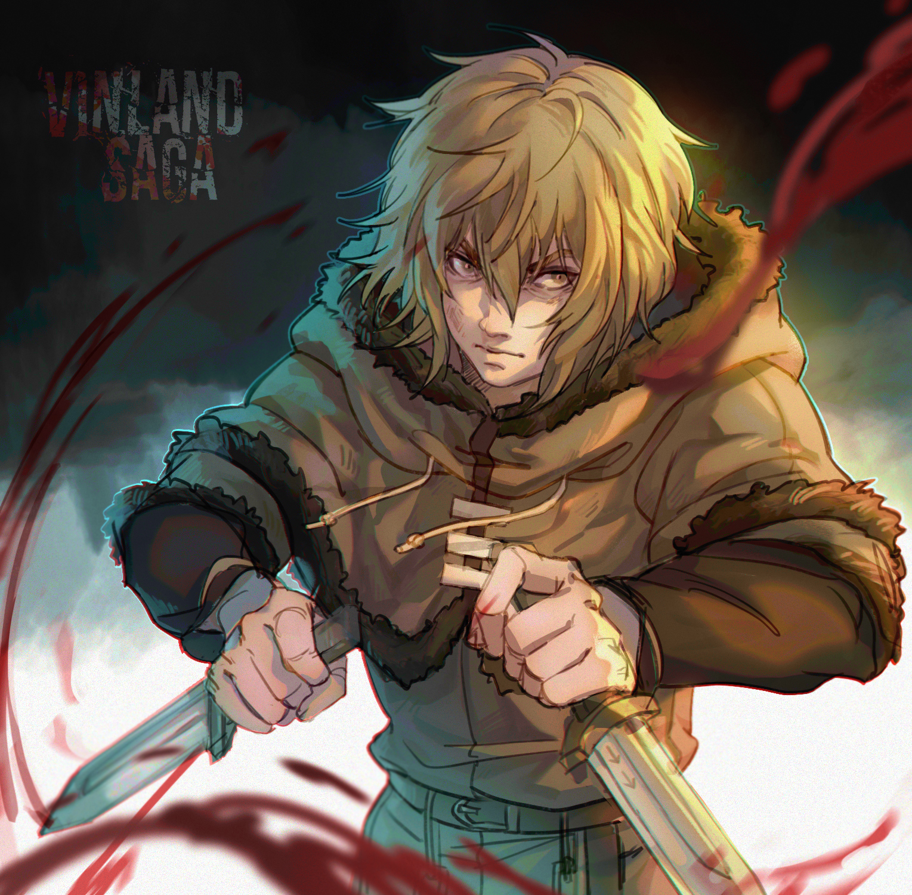
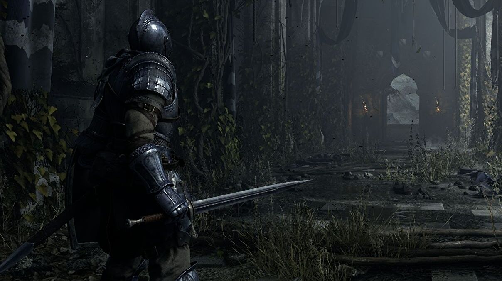
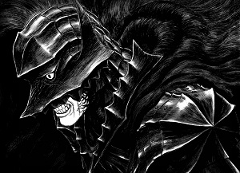
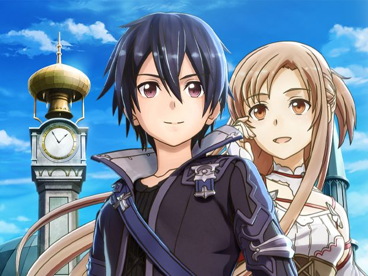
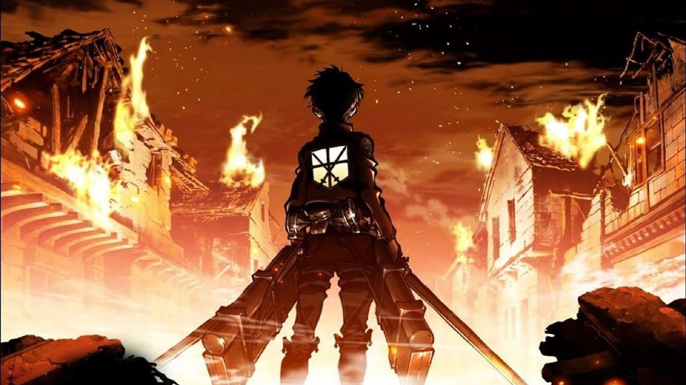
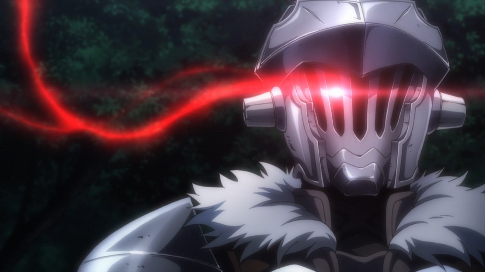

Animes Medievales.
-

Vinland.
Thors, un gran guerrero vikingo, es asesinado en batalla por Askeladd, un mercenario. Thorfinn, hijo de Thors, juró vengarse. Thorfinn debe realizar hazañas para Askeladd, a fin de ganar el derecho de retarlo a un duelo, lo que lo lleva a involucrarse en la guerra por la corona de Inglaterra.
-

Arslan.
En una época de terribles guerras, el Rey Andragoras y sus oficiales más leales se encuentran en el campo de batalla debatiendo sobre qué hacer. Cuando Daryoon, uno de los oficiales más jóvenes, se muestra contrario a seguir enviando hombres al campo de batalla, el monarca entra en cólera y lo destierra.
-

Berserk.
La historia está ambientada en una época con tintes de la Europa medieval y renacentista, en la cual se cuenta la vida de Guts (cuyo nombre fue traducido como Gatsu en las primeras ediciones en castellano), un mercenario huérfano que acompañado del elfo Puck, caza seres demoníacos llamados apóstoles.
Animes de Fantasia.
-

Sword Art Online.
La historia se desarrolla en el año 2022, cuando un videojuego de rol multijugador masivo en línea de realidad virtual llamado «Sword Art Online» acaba de ser lanzado. Allí, los jugadores pueden entrar a un mundo denominado Aincrad y controlar sus avatares tal como lo harían con sus cuerpos reales por medio del NerveGear, un casco de realidad virtual capaz de estimular sus cinco sentidos a través de sus cerebros. Sin embargo, los jugadores se dan cuenta de que no pueden salir del videojuego; poco tiempo después, el creador de SAO, Akihiko Kayaba, aparece y les informa que si mueren en el mundo virtual también lo harán en el mundo real, para abandonar el juego deberan superar los 100 niveles del juego.
-

Shingeki no kyojin.
La historia se desarrolla en un mundo ficticio en el que la humanidad está al borde de la extinción a causa de unas criaturas humanoides llamadas «titanes», lo que obliga a los sobrevivientes a refugiarse en tres enormes murallas que impiden el acceso a dichos monstruos. La trama gira en torno a Eren Jaeger quien después de perder a su madre a manos de los titanes, decide unirse al «Ejército de las murallas» junto a su hermana adoptiva y su mejor amigo con el objetivo de vengar la muerte de su madre y destruir la los titanes. Más adelante, descubre que tiene el poder de transformarse en un titán con características especiales, lo que desencadenará toda una serie de acontecimientos.
-

Goblin Slayer.
En un mundo de fantasía, los aventureros de todas partes se unen al Gremio, a fin de completar contratos de cualquier trabajo disponible que incluya la caza de diversos tipos de monstruos que vagan por la tierra u otro tipo de misión que sea ofrecida. Una sacerdotisa inexperta se une a un grupo de novatos para su primera aventura, que es destruir un nido de goblins. Sin embargo, la falta de experiencia y exceso de confianza de los integrantes les juega una mala pasada y el resto de su grupo es eliminado. Sorpresivamente, ella es salvada por un hombre conocido como Goblin Slayer, un aventurero cuyo único propósito es la erradicación de los goblins con una dedicación extrema
| Titulo. | Cantidad de capitulos Anime. | Cantidad de capitulos Manga. |
|---|---|---|
| Vinland. | 58 | 360 en emision. |
| Arslan. | 85 | 180 Finalizado. |
| Berserk. | 65. | 380 En emision. |
| Sao | 90 | 120 Finalizado. |
| Shingeki no kyojin. | 100 | 560 Finalizado. |
| Goblin Slayer. | 50 | 180 En emision. |